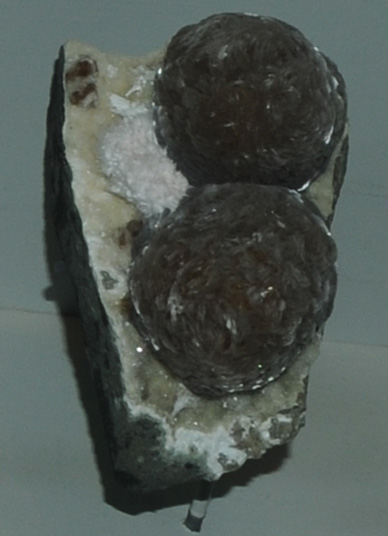

|

| NaCa16AlSi24O60(OH)8.14H2O
This sample of gyrolite is displayed in the Smithsonian Museum of Natural History. Gyrolite is a silicate mineral with the composition NaCa16AlSi24O60(OH)8.14H2O. The sample at left is about 6 x 8 cm across and is from Bombay, Maharashtra, India. It is described as gyrolite with mesolite and calcite.
|